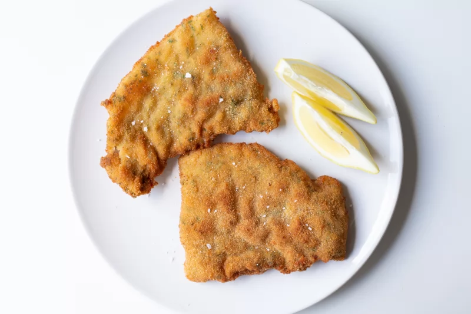

Un plato extremadamente popular en la cocina argentina. Se pueden preparar con ternera u otras carnes. También con vegetales como berenjena, calabaza o calabacín.
Las milanesas, muy probablemente herencia de los italianos, son uno de los platos insignia de la gastronomía argentina. Se suelen acompañar con puré de papas, papas fritas, ensalada, arroz e incluso pasta. Aunque normalmente se comen tal cual, fritas u horneadas, también cuentan con muchísimas versiones que añaden más ingredientes. Entre ellas, las más conocidas son las milanesas a la napolitana (con tomate y queso por encima) o las milanesas a caballo (con un huevo frito).